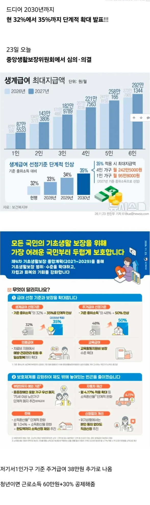

[속보] 기초생활수급자 생계급여 전면 인상
댓글
청년이 아니라 장년이라도 사지멀쩡하면 아예 대상이 되지를않음 걱정 ㄴㄴ
댓글중에 몇명은 저거 받을수 있을듯
세금 달달하다
이럴거면... 차라리 전국민에게 주고 간접세로 더 뜯는게 낫지 않나...?
고소득자들은 어차피 저거 받아도 다 소비로 쓸텐데
세금 걱정하는 애들은 저거 딱 매년 오르는 물가상승분보다 약간 낮게 올라가는거 모를듯
올라는 가겠지 근데 물가 상승분 감안하면 조삼모사임
왜 내 월급은 감안안하고 세금만 오를까. 세금이 오르면 강제로 월급도 올려야는데 결국 직장인한테 전가한거네!
월급도 올랐잖아. 지금까지 초봉이랑 똑같이 받고다님?
열불내는 저능아들 진짜많네
가난하다는 이유로 조건없이 돈 주는건 자립의지 약화시키는 것 밖에는 안된다는
이건희 회장 말이 생각나네
국가단위로
니들이 악바리로 버텨라 가버리면
진짜 그 악바리가 시민들 모가지에 칼날로 돌아와유
나 실업급여 같은거 부정수급 두번이나 신고해서 포상금 받았눈디
신고하면 20퍼정도주니까 신고해라
이것이 애국이다 개추
저소득자 지원은 해줬으면함
개같은 “전국민” 경제살린다는 좆같은 말과함께 10만원 20만원 처 뿌리지말고 ㅋ
아 물론 이거 정치아님. 누구지칭이야기안함
그냥 안했으면좋겟다고 ㅎㅎ
저소득자는… 저 돈 안주면 칼들고 나와서 프랑스처럼 되는거임…
병신같네 진짜 시발 ㅋㅋㅋ
걍 차등으로 좀 나눠주지
예전 노숙자이야기에서 30만원받는대 일해서 30받으면 기초수급 끊겨서 어쩔수없이 일 못한다는거 봤는대
나는 병마 때문에 잘타먹었다
생계급여 없었으면 죽었을듯
이제 탈수급간다
진짜 사회안전망 효과 제대로 봤네.
수급자 300만 시대에, 잘 하는 짓이지 ㅋㅋㅋ
소득이랑 자산요건이 낮은 건 맞는데 자산이랑 소득은 근로형태나 직장에 따라 낮게 꾸밀 수 있는 방법이 진짜 개많음.. 신도시 공공분양이나 미혼모, 중기청, 생초 로또 특공 이런 거 다 소득이나 자산 죄다 구라 치는데 뭐 소득은 그렇다쳐도 자산 돌려놓고 무주택이라고 구라치는 건 애인,친구,가족만 협조해주면 일도 아님
포퓰리즘이지 씹...
나라에 돈 존나 많은가봐
돈많은거아닌데~돈많은거아닌데~ㅋㅋㅋ
ㅋㅋㅋㅋㅋㅋㅋㅋㅋ
부림방지비라고 생각해야함 나이먹고 소득도없고 자산도없는데 짠해
AI때문에 직장 잃고 인생 나락가는 사람 많아지겠는건 알겠는데
그만큼 세수확보되고있는거 맞음?
가난하면 포뮬리즘
굶어죽지만 않게 줘야 돈을 벌 생각을 할텐데 병신같네
국민연금 낸 사람이 더 못받는 사회
유럽화 되어가는거지 뭐
이대로 우경화되서 나라가 한번 파시즘 비스무리하게 터져준다음
다시 정상화 될 것
근데 난 나쁘지 않다고 생각함
어찌됬던 이대로 지속되나 파시즘 혁명 터져서 개판되나
무의미한 노동하다가 불특정 다수에게 피빨리고 죽는건 매한가지인데
이왕 죽는거 피 안빨리고 피빠는 버러지들 싹 청소하고 국가 정화한번 하는게 더 좋지
그런 식이면 그 다음은 피 덜 빠는 덜버러지들 청소하고. 그리고 그 다음 빝바닥은 너 나 우리임.
집단의 속성.
ㅇㅇ 그렇게 나라한번 뒤집어지고 새 역사 시작되는거임
그냥 무의미하게 소멸되는 역사보다 어차피 다 죽는거 시원하게 청소하는 도파민 파티 함 하고 가는게 맞지
문제는 그 전에 밑바닥에서 레볼루숑한다 부자사냥부터 갈기는 프랑스꼴나는거다ㅋㅋㅋㅋ
우경화는 무슨
그런다고 한번 생긴 복지 없어지더냐
프랑스꼴나는거지
또 물가 오르겠네 ㅅㅂ ㅡㅡ
내 지인이 기초수급자인데 그돈으로 맨날 술 사먹음 ㅋㅋㅋ 아껴 쓴다,저축 없음
기초수급자가 전체 인구의 한 5%는 넘을껄 ㅋㅋㅋㅋ
시체에 주사 어쩌구 저쩌구
솔직히 Ai때메 10년뒤엔 인구 90%는 수급자 될 거 같음
근로 능력있으면 저거 못받을걸
술, 담배 못사게하면 인정
그냥 기본소득하자..
당연히 필요한자들에게 줘야되지만
드라마 정도전에 나왔던 이인임 명언이 생각나는구만
이건 솔직히 신청받고 주는게 아니라 받아야할사람들 조사해서 찾아가서 지급해주는게 낫다고 봄
진짜 사각지대 있는 사람은 몰라서 못받고 한량 건달 이런사람들은 주민센터가서 패악질부리고
대 AI 시대가 도래하면 전국이 기초생활수급자 된다 이말이야! 미리 미리 준비하자